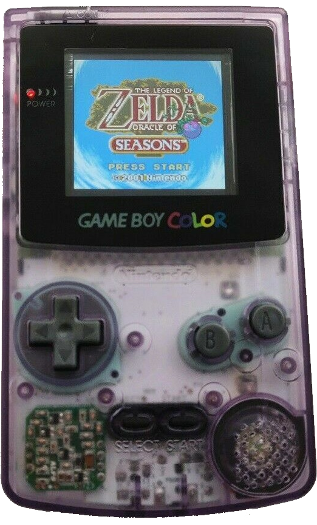
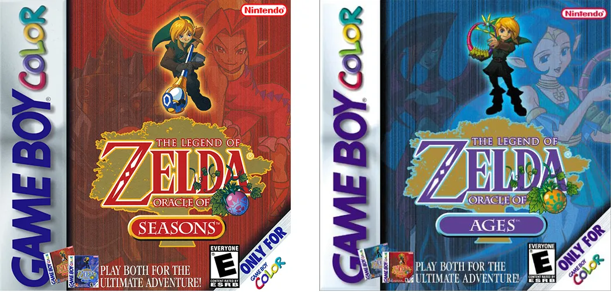
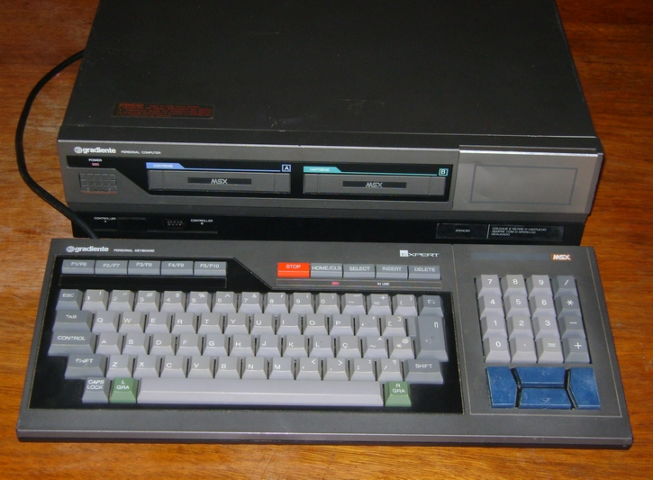

THE ORIGINS OF TGL
A Long Story...
TL;DR: I am literally obsessed with tile-based graphics and 8-bit systems so I decided to create a game engine that would attempt to replicate that same look and feel.
 I have always loved the Nintendo GameBoy Color handheld. But sadly, I've never owned one. I remember when I was a kid I used to pester my parents again and again to buy me one but they either couldn't afford it or they just didn't think I needed it, since I already had a Super NES at home. So I basically grew up just seeing screenshots of GBC games in magazines.
Around the year 2000, I was about 13 years old and I found a gaming mag that had some reviews and screenshots of The Legend of Zelda: Link's Awakening DX, as well as The Legend of Zelda: Oracle of Ages/Seasons, and I became truly fascinated by the graphics. The games looked so brightly colorful, charming and fun, so I became enchanted with the little machine (and obviously with the little green man with the sword & shield that I later came to learn was Link). The tile-based nature of the system seemed obvious, and for some reason I became obsessed with tile graphics.

At that time the launch of the Playstation 2 was just around the corner, but I believe that by then the GBC was at the height of its popularity, even though my friends were all talking about the Playstation and Nintendo 64. I remember being jealous the only one time that I saw a GBC in person, at school. A friend showed it to me, if I recall correctly it was the translucent model (like the one in the picture on the left), and he was playing Pokémon Yellow, or Red, or Blue, or some other early Pokémon game. I held it, and he warned me to be careful not to mess with the game as he feared that I could accidentally delete his save data or something, lol... So I didn't have time to enjoy and appreciate it, I don't even remember playing it, I think I just held it and looked at the screen, then he quickly grabbed it back.
As a teenager I also had an early 8-bit computer system from the 1980's called MSX that once belonged to my father, like the one in the picture below. I used to play a lot of games on it, and they were mostly tile-based, just like the GameBoy. The MSX has a BASIC programming language interpreter built into it, so I quickly learned how to create simple programs and games on it, as my passion for tile-based graphics grew stronger.
Later on, as an adult, I bought an old Windows PC and learned Java and C++. Computer programming is my greatest passion, so it's no wonder that I soon started working in the software industry as a developer, though I would constantly develop my own personal software projects at home, just for the fun of it.

At some point during my career, I found the SDL library, which allowed me to easily draw tiles and make simple games in C++, so I began trying to create some kind of library that could encapsulate some of the beauty and charm of tile-based systems that I love so much.
A decade later, after countless iterations of countless abandoned projects, I finally came up with a brand new library project from scratch where the user could easily draw 8x8 tiles, play square-wave sounds using metacommands (aka Music Macro Language), read keyboard and mouse input, detect collisions and all the other bells and whistles of a (very simplified) game engine. It was from this project that TileGameLib, aka TGL, came to be my "pet" project.
More recently, I came across other projects that more or less incorporated some of the aesthetic that I wanted to achieve, specifically the Bitsy game engine and the PICO-8 fantasy console, which both greatly inspired me to continue developing TGL as I realized there is actually a "niche market" for this kind of thing (apparently I'm not the only tile lover in the world, lol).
And this is where it all began. :)
Back to Home